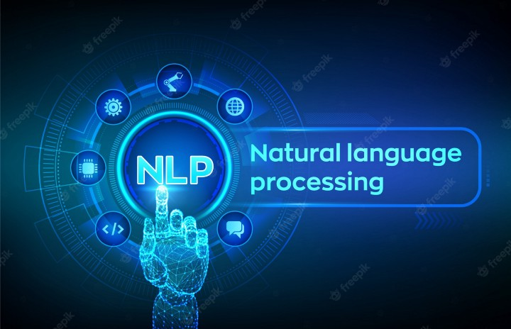
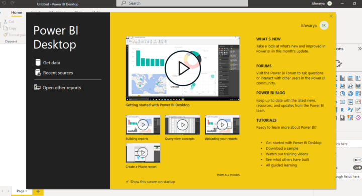

According to industry estimates, only 21% of the available data is present in a structured and readily usable form. Data is being generated in exponential rate every minute, as seen in the info…

Business Intelligence (BI) can unlock the value of data for your enterprise by providing data analytics reporting and visualization capabilities. But beginners seeking to learn a BI tool maybe flooded with the sea of tools and jargon present in the industry today and often quit even before starting.
Transforming into a “data-driven” company has been a commonly professed goal for many firms over the past decade. Whether their larger goal is to achieve digital transformation, “compete on analytics,” or become “AI-first,” embracing and successfully managing data in all its forms is an essential prerequisite today.
Back in 2001, the term ‘data science’ was first used in a publication by William Cleveland. Fast forward to 2012 and the Harvard Business Review hailed data science as ‘the sexiest job of the 21st century’. Fast forward to today and every business wants to employ data scientists and many graduates opt for data science as their career choice without thinking thoroughly about what it is and how they can excel in it.